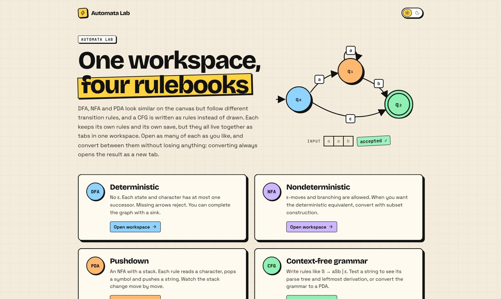
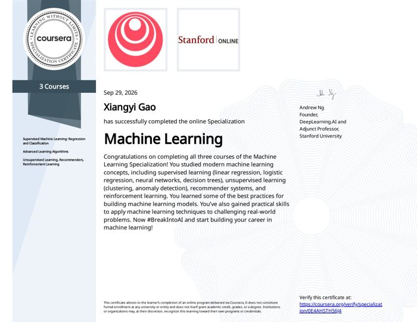
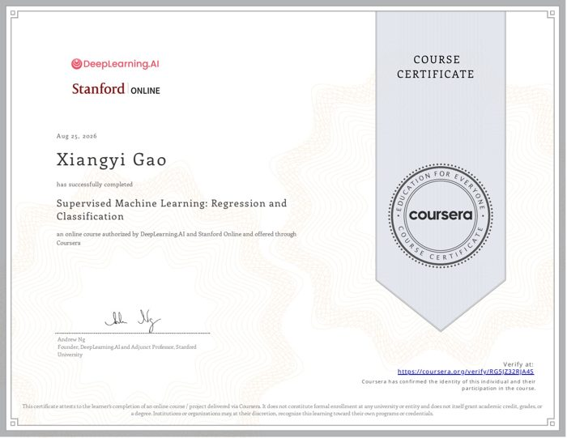
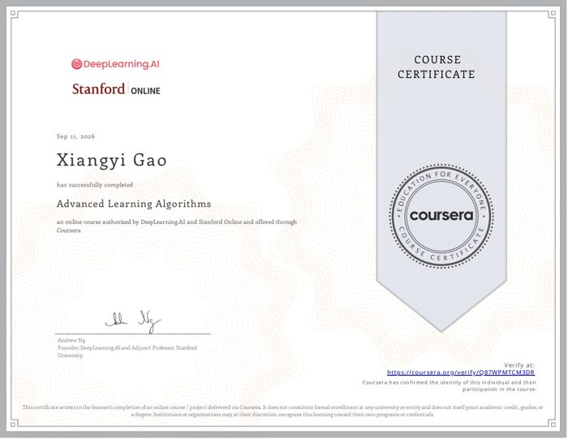

Fig. 1 · Computer vision
SportLens
Does partially fine-tuning ResNet-18 beat head-only training on 100 sports classes?
Top-1 accuracy, 500 test images, single run.
PyTorch · ResNet-18View experiment ↗
CS @ UNC–Chapel Hill · Class of 2029
I’m working toward computer vision and robot perception: teaching machines to see, and then to act in the physical world.
Open to undergraduate research positions

Measure carefully. Report honestly.
Undergraduate Research Assistant · Wearable bioelectronics
Research Assistant · Piezoelectric ceramics
Small studies. Measured results. Open questions.
Fig. 1 · Computer vision
Does partially fine-tuning ResNet-18 beat head-only training on 100 sports classes?
Top-1 accuracy, 500 test images, single run.
Fig. 2 · Robustness
What happens to an MNIST classifier when every digit moves two pixels?
Random forest, 10,000 test images under the same shift.
Fig. 3 · Numerical modeling
How much does a time step change a simulation? Explicit Euler vs. RK4 on an SIR epidemic model, with trajectory plots and error analysis. MATH 383L.
From an idea to something you can use.

Web app · Oct 2026
Automata Lab: a browser workbench for formal languages. Draw DFAs, NFAs and PDAs, write context-free grammars, and watch strings walk through them. Includes subset construction, DFA minimization, regex ↔ NFA, CFG → PDA and CNF, an ambiguity check, a practice mode, and a pumping-lemma game.
Open Lumina ↗
HackNC 2026 · Team
Job-application prep as an explorable voxel workshop: upload materials, browse jobs, and generate tailored resumes and cover letters. I built the explorable Three.js scene (island, character, camera controls, accessible HTML fallback) and connected it to the resume-generation API.
View repository ↗Robotics · 2023 – 2024
Founded and led a 10-member FIRST Tech Challenge team as lead programmer. Wrote autonomous navigation and PID control in Java; the team earned the Inspire Award, FTC’s top honor.
Mechanism design · 2 granted patents
Sole inventor. Two motors drive an iris-style aperture that sizes itself to the pill and a lift rod that catches and releases exactly one pill at a time.
Everyday tools · Prototype
A lightweight Gmail management app built with Python and Streamlit, using OAuth 2.0 for account authorization.
View repository ↗Foundations to build on.

Specialization · 3 courses · Sep 2026
DeepLearning.AI · Stanford Online
Verify ↗
Course 01 · Aug 2026

Course 02 · Sep 2026
Course 03 · Sep 2026
Beyond the final numbers, I want to understand why.
My path runs from programming FTC robots, through materials and wearable-sensor labs, to computer vision experiments. I’m looking to join a lab working on vision or robotics. Outside of code, I enjoy piano, hiking, and road trips.